Convocados por el Festival Internacional de Poesía de La Habana se dan cita en nuestro país escritores y artistas de diversas manifestaciones provenientes de varios continentes. De esta manera el Festival se convierte en un espacio aglutinador que permite tomar la temperatura del quehacer artístico y literario a nivel internacional. Dedicado en esta edición a conmemorar el bicentenario de la insigne escritora cubana Gertrudis Gómez de Avellaneda y en consecuencia a la presencia de la mujer en la vida social y cultural de nuestros días.
Siguiendo esta premisa se presentarán tres exhibiciones en el circuito donde estarán ocurriendo las actividades previstas en el programa. Ellas son: Evasale a cazar, PERDIDAS en sí, y Los del patio; en la Sala Villena de la UNEAC, Casa de la Poesía, y el Taller de Cerámica Amelia Peláez, respectivamente.
Eva sale a cazar es una muestra que pretende mostrar la naturaleza del género femenino a través de visiones parciales que actúen como respuesta al modelo predefinido que se tiene del mismo. Para ello hemos recurrido a las particularidades de cada artista y a sus poéticas individuales buscando el reflejo de un universo creativo donde se salva a la mujer del arquetipo de las visiones de género. Ha sido nuestro propósito el que exista una promiscuidad generacional así como en cuanto a las manifestaciones artísticas; una puesta diversa donde concurren variadas técnicas.
Por su parte PERDIDAS en sí,busca re-interpretar el tema del abuso femenino como temática medular en el arte, con una perspectiva orientada a la auto-enajenación.En ella aparece una mujer auto-flageladareproduciendo sus anhelos en el plano de la fantasía, de lo irreal, una mujer que busca en el elemento fálico una personalidad “otra” en tanto se reconoce como un ser castrado. Muestra a una mujer que ya no se pregunta el motivo de su estado angustioso, sino que se abandona a la resignación sin cuestionarse los precedentes. La exposición nos habla de un punto de vista donde los artistas trabajan sobre el fenómeno autoexclusión femenina del medio circundante y auto-reclusión hacia el yo psicológico. Se trata de una mujer lacerada incluso en el plano físico por sus propios pensamientos reprimidos yrepresores. Un significante que ha sido manipulado a través del lenguaje y vilipendiado a lo largo de la historia de manera tal que ha quedado atrapado dentro un cuerpo que experimenta cierto goce repulsivo y hasta morboso.
Los del patio, es un ejemplo que pone de relieve la labor que desarrollan los grupos artísticos nacidos de ciertas inquietudes comunitarias. Es el caso del Colectivo de Artes Plásticas “10 de Octubre”, con más de 35 años de accionar en el barrio. Esta muestra que abarca varios géneros del trabajo que realizan dentro de las artes visuales, es sin dudas una magnífica representación del nivel de calidad que pueden alcanzar estos aristas, algunos de larga trayectoria en la vida cultural de la capital cubana. Para esta ocasión se hacen acompañar de otros cultivadores de estas modalidades artísticas no integrantes del grupo, en las que se mezclan el talento y el mirar de los jóvenes con la sabiduría de quienes han andado un largo trecho en este oficio.
Pierre Bernet – Deney Terry
Eva sale a cazar:
- Lesbia VentDumois
- Rosmery Sanabria
- LidsieAlvisa
- Alicia Rodríguez
- Yamilis Brito
- Jacqueline Brito
- Lisandra García
- Hilda María Rodríguez
- Lupe González
- Ana María Erra
- Veronik Guerra
- Ileana Mulet


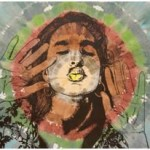

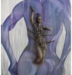

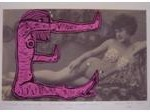

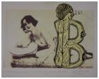

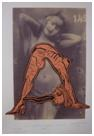

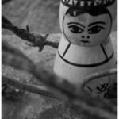

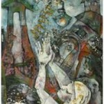

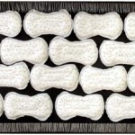


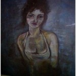


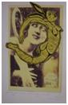

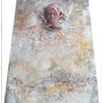

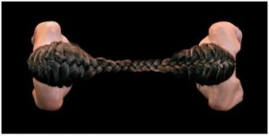
PERDIDAS en sí:
- Lázaro Luis García
- Ihosvani (IHOS)
- Lupe González
- Jesús Lara
- Cirenaica Moreira
- Laura Portilla
- Paola Bernardini
- Altea Alberti


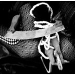

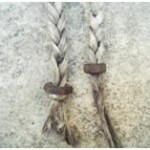

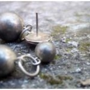

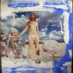

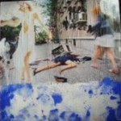

Los del patio
- Ernesto Abel Pérez
- Sarahy Martínez
- Michel Díaz
- Paola Bernardini
- Yaroldy Manzano
- Pedro A. López Cerviño
- Pierre Bernet
- Lidia Aguilera
- Lázaro Bermúdez
- Linet Sánchez
- Daniel Gutiérrez


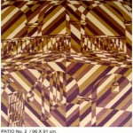

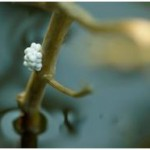

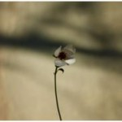

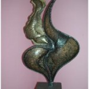

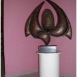


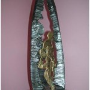

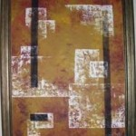

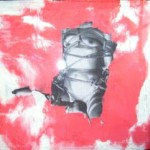